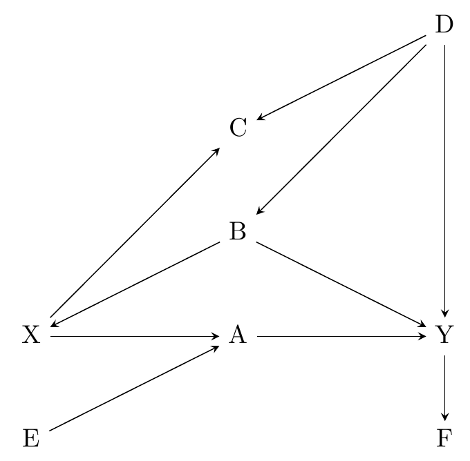
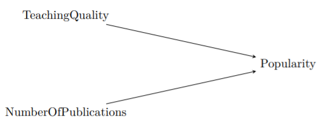
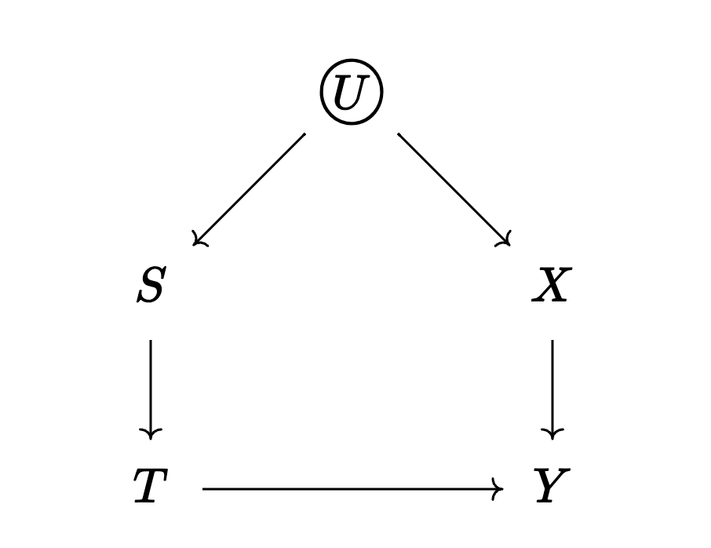

Packages et al.
library(tidyverse)
theme_set(theme_light(base_family = "Optima"))Set up
Note. I will be asking you to draw some DAGs. There are many ways to do this—e.g., dagitty, ggdag, shinydag. I tend to use thiswebsite and then copy-paste a screen shot of the result. You can use whatever you want (whatever is easier, including Word or PowerPoint if you must insist).
Ignorability
Experiments work because they make the distribution of potential outcomes the same across levels of the treatment variable. In other words, the potential outcomes and the treatment indicator are independent.
This is how this idea was introduced in class:
\[ \begin{align} Y^0 \perp T, && Y^1 \perp T \end{align} \]
Assume the following table comes from perfectly executed experiment.
| Group (\(T\)) | \(E[Y^1]\) | \(E[Y^0]\) |
|---|---|---|
| \(T = 1\) | 10,000 | ? |
| \(T = 0\) | ? | 5,000 |
*30% of the population is in group T = 1
Fill in the missing cells.
What is the ATE?
Go back to the glossary I asked you to start creating during Week 1.
Make sure to add the following terms:
DAG.
Paths.
Direct effects.
Indirect effects.
Total effects.
Front door paths.
Back door paths.
Confounding.
Collider.
Open Path.
Closed Path.
Drawing DAGs.
The following exercises are problems from NHK (Chapter 7).
Draw a causal diagram for the research question “do long shift hours make doctors give lower-quality care?” that incorporates the following features (and only the following features):
Long shift hours affect both how tired doctors are, and how much experience they have, both of which affect the quality of care
How long shifts are is often decided by the hospital the doctor works at. There are plenty of other things about a given hospital that also affect the quality of care, like its funding level, how crowded it is, and so on
New policies that reduce shift times may be implemented at the same time (with the timing determined by some unobservable change in policy preferences) as other policies that also attempt to improve the quality of care
Consider this research question: Does the funding level of public schools affect student achievement for students in your country?
What is the treatment and what is the outcome of interest?
Write down a list of relevant variables.
Which of the variables in your list in part b are causes of both treatment and outcome?
Why might we want to pay extra attention to the variables listed in part c?
Draw a causal diagram of the variables listed in part b.
Simplify the diagram from part e.
How can a causal diagram be modified so as to avoid cyclic relationships?
Consider the diagram below. It depicts a cyclical relationship between student achievement and motivation. If students achieve more (i.e., score well on exams), then their motivation goes up, and if their motivation goes up, they achieve more. Change the diagram so that the relationship is not cyclic anymore.
\[ \text{Student Achievement} \longleftrightarrow \text{Motivation} \]
Hint: We didn’t see this in class, but you should be able to figure it out from the readings.
The following exercises are problems from NHK (Chapter 8).
Assuming that a path has no colliders on it, what is the difference between a path being Open and Closed?
Consider the below generic causal diagram.

List every path from X to Y.
Which of the paths are front-door paths?
Which of the paths are open back-door paths?
What variables must be controlled for in order to identify the effect of X on Y? (only list what must be controlled for, not anything that additionally could be controlled for).
Which of the following describes a causal path where all the arrows point away from the treatment?
Open Path
Closed Path
Front Door Path
Back Door Path
Consider the figure below, which depicts the relationship between teaching quality, number of publications (e.g., articles, books), and popularity among scholars and students in a population of professors.

What type of variable is Popularity in one path on this diagram?
Discuss what would happen if you controlled for Popularity.
Go to the app Steve showed us in class.
https://cbdrh.shinyapps.io/daggle/
Spend some time noodling around with it and upload screenshots with the right answer for three DAGs with 4, 6, and 8 nodes each. Set the complexity to “difficult.”
House of DAG Simulation.
I’ve included a little script with a couple of functions meant to illustrate the connection between DAGs and the estimands we saw in class (ATE, ATT, ATC).
Save it to your project and load it using the source() function.
You should see a function called hod_simulation() which creates a dataset that corresponds to the following DAG:

The hod_simulation() function has the following arguments:
N: Sample Size
rho: The correlation between \(S\) and \(X\), it accepts values between -1 and 1.
Bt: this is the treatment effect.
Bx: this is the direct effect of \(X\) on \(Y\)
Note. There’s bunch of stuff going on under the hood, but we won’t worry about that this week.
This is the dataset it creates:
Standard Error ~ 0.322
Power ~ 0.873Joining with `by = join_by(variable)`# A tibble: 4 × 3
variable sd mean
<chr> <dbl> <dbl>
1 y 5.22 1.51
2 t 0.500 0.51
3 x 0.995 1.01
4 s 0.970 1.02Standard Error ~ 0.405
Power ~ 0.999Joining with `by = join_by(variable)`# A tibble: 4 × 3
variable sd mean
<chr> <dbl> <dbl>
1 y 6.75 4.98
2 t 0.500 0.52
3 x 1.02 1.00
4 s 1.01 1.02Note. Ignore the “Standard Error” and “Power” messages.
# A tibble: 1,000 × 6
y0 y1 t y x s
* <dbl> <dbl> <int> <dbl> <dbl> <dbl>
1 3.03 5.03 1 5.03 1.90 1.84
2 5.20 7.20 1 7.20 0.545 0.699
3 -0.351 1.65 1 1.65 -0.355 0.729
4 -2.76 -0.764 1 -0.764 1.03 1.44
5 -3.79 -1.79 0 -3.79 0.0507 0.335
6 12.9 14.9 0 12.9 2.57 1.71
7 6.70 8.70 0 6.70 1.63 1.56
8 3.68 5.68 0 3.68 1.40 0.694
9 -1.65 0.353 1 0.353 0.307 0.0589
10 10.8 12.8 0 10.8 1.77 2.14
# ℹ 990 more rowsWithout looking at the results just yet… do you think the naive estimate will be larger or smaller than the “real” estimate ( \(ATE = 2\) )?
Check your answer. What are the results given by the naive estimator?
Re-do this but set rho to -0.8 (so that \(S\) and \(X\) are now negatively correlated).
Hint: You can use group_by() and then summarize() to create a table just like Table 3.1.
Take the dataset d created in the previous question and modify it so that the treatment is now randomized (this will destroy the path between \(S\) and \(T\)).
Hint: You can achieve this using the sample() function on d$t.
You will also want to create a new d$y using the ifelse() function (or something similar to that).
Without looking at the results just yet… do you think the naive estimate will be larger or smaller than the “real” estimate ( \(ATE = 2\) )?
Check your answer. What are the results given by the naive estimator?
Use lm() to predict the newly created y from t. What are the coefficient values?
Use lm() to predict the newly created y from t and x. What are the coefficient values?
---
title: "Week 3"
callout-appearance: simple
callout-icon: false
editor_options:
chunk_output_type: console
---
*Set up*
```{r}
#| code-summary: Packages et al.
#| message: false
library(tidyverse)
theme_set(theme_light(base_family = "Optima"))
```
*Note. I will be asking you to draw some DAGs. There are many ways to do this---e.g., [dagitty](https://dagitty.net/), [ggdag](https://cran.r-project.org/web/packages/ggdag/vignettes/intro-to-ggdag.html), [shinydag](https://www.gerkelab.com/project/shinydag/). I tend to use [this](https://q.uiver.app/)[website](https://q.uiver.app/#q=WzAsMyxbMSwwLCJcXExhcmdlIFxcdGV4dGNpcmNsZWR7IFxcbm9ybWFsc2l6ZXtVfX0iXSxbMCwxLCJYIl0sWzIsMSwiWSJdLFswLDFdLFswLDJdLFsxLDJdXQ==) and then copy-paste a screen shot of the result. You can use whatever you want (whatever is easier, including Word or PowerPoint if you must insist).*
## Exercise
*Ignorability*
Experiments work because they make the distribution of potential outcomes the same across levels of the treatment variable. In other words, the potential outcomes and the treatment indicator are *independent.*
This is how this idea was introduced in class:
$$
\begin{align}
Y^0 \perp T, && Y^1 \perp T
\end{align}
$$
Assume the following table comes from perfectly executed experiment.
| Group ($T$) | $E[Y^1]$ | $E[Y^0]$ |
|:-----------:|:--------:|:--------:|
| $T = 1$ | 10,000 | ? |
| $T = 0$ | ? | 5,000 |
: **Perfect Experiment Example\*** {#tbl-experiment .stripped}
[\*30% of the population is in group T = 1]{style="color: #C5C5C5;"}
::: callout-note
- Fill in the missing cells.
- What is the ATE?
:::
## Exercise
Go back to the glossary I asked you to start creating during Week 1.
Make sure to add the following terms:
::: callout-note
- *DAG.*
- *Paths.*
- *Direct effects.*
- *Indirect effects.*
- *Total effects.*
- *Front door paths.*
- *Back door paths.*
- *Confounding.*
- *Collider.*
- *Open Path.*
- *Closed Path.*
:::
<aside>See: @sec-glossary</aside>
## Exercise
*Drawing DAGs.*
*The following exercises are [problems](https://github.com/NickCH-K/TheEffectAssignments) from NHK (Chapter 7).*
::: callout-note
Draw a causal diagram for the research question "do long shift hours make doctors give lower-quality care?" that incorporates the following features (and only the following features):
a. Long shift hours affect both how tired doctors are, and how much experience they have, both of which affect the quality of care
b. How long shifts are is often decided by the hospital the doctor works at. There are plenty of other things about a given hospital that also affect the quality of care, like its funding level, how crowded it is, and so on
c. New policies that reduce shift times may be implemented at the same time (with the timing determined by some unobservable change in policy preferences) as other policies that also attempt to improve the quality of care
:::
## Exercise
::: callout-note
Consider this research question: Does the funding level of public schools affect student achievement for students in your country?
a. What is the treatment and what is the outcome of interest?
b. Write down a list of relevant variables.
c. Which of the variables in your list in part b are causes of both treatment and outcome?
d. Why might we want to pay extra attention to the variables listed in part c?
e. Draw a causal diagram of the variables listed in part b.
f. Simplify the diagram from part e.
:::
## Exercise
::: callout-note
How can a causal diagram be modified so as to avoid cyclic relationships?
Consider the diagram below. It depicts a cyclical relationship between student achievement and motivation. If students achieve more (i.e., score well on exams), then their motivation goes up, and if their motivation goes up, they achieve more. Change the diagram so that the relationship is not cyclic anymore.
$$
\text{Student Achievement} \longleftrightarrow \text{Motivation}
$$
:::
::: callout-tip
Hint: We didn't see this in class, but you should be able to figure it out from the readings.
:::
## Exercise
*The following exercises are [problems](https://github.com/NickCH-K/TheEffectAssignments) from NHK (Chapter 8).*
::: callout-note
Assuming that a path has no colliders on it, what is the difference between a path being Open and Closed?
:::
## Exercise
::: callout-note
Consider the below generic causal diagram.
{fig-align="center" width="60%"}
a. List every path from X to Y.
b. Which of the paths are front-door paths?
c. Which of the paths are open back-door paths?
d. What variables must be controlled for in order to identify the effect of X on Y? (only list what must be controlled for, not anything that additionally could be controlled for).
:::
## Exercise
::: callout-note
Which of the following describes a causal path where all the arrows point away from the treatment?
a. Open Path
b. Closed Path
c. Front Door Path
d. Back Door Path
:::
## Exercise
::: callout-note
Consider the figure below, which depicts the relationship between teaching quality, number of publications (e.g., articles, books), and popularity among scholars and students in a population of professors.
{fig-align="center" width="60%"}
a. What type of variable is Popularity in one path on this diagram?
b. Discuss what would happen if you controlled for Popularity.
:::
## Exercise
::: callout-note
Go to the app Steve showed us in class.
<https://cbdrh.shinyapps.io/daggle/>
Spend some time noodling around with it and upload screenshots with the right answer for three DAGs with 4, 6, and 8 nodes each. Set the complexity to "difficult."
:::
## Exercise
*House of DAG Simulation.*
I've included a [little script](https://github.com/acastroaraujo/socStats2/blob/main/hod_simulation_functions.R) with a couple of functions meant to illustrate the connection between DAGs and the estimands we saw in class (ATE, ATT, ATC).
Save it to your project and load it using the `source()` function.
You should see a function called `hod_simulation()` which creates a dataset that corresponds to the following DAG:
::: grid
::: g-col-7
{width="100%"}
:::
::: g-col-5
- $Y$: outcome
- $T$: treatment
- $U$: unobserved confounder
- $S$: affects selection into $T$
- $X$: affects $Y$ directly
:::
:::
The `hod_simulation()` function has the following arguments:
- `N`: Sample Size
- `rho`: The correlation between $S$ and $X$, it accepts values between -1 and 1.
- `Bt`: this is the treatment effect.
- `Bx`: this is the direct effect of $X$ on $Y$
*Note. There's bunch of stuff going on under the hood, but we won't worry about that this week.*
This is the dataset it creates:
```{r}
source("hod_simulation_functions.R")
set.seed(12345) ## include this so that grading is easier for me.
d <- hod_simulation(N = 1e3, Bt = 2, Bx = 4, rho = 0.8)
```
*Note. Ignore the "Standard Error" and "Power" messages.*
```{r}
d
```
::: callout-note
- Without looking at the results just yet... do you think the naive estimate will be larger or smaller than the "real" estimate ( $ATE = 2$ )?
- Check your answer. What are the results given by the naive estimator?
- Re-do this but set `rho` to -0.8 (so that $S$ and $X$ are now negatively correlated).
:::
::: callout-tip
Hint: You can use `group_by()` and then `summarize()` to create a table just like @tbl-experiment.
:::
## Exercise
::: callout-note
Take the dataset `d` created in the previous question and modify it so that the treatment is now randomized (this will destroy the path between $S$ and $T$).
:::
::: callout-tip
Hint: You can achieve this using the `sample()` function on `d$t`.
You will also want to create a new `d$y` using the `ifelse()` function (or something similar to that).
:::
::: callout-note
- Without looking at the results just yet... do you think the naive estimate will be larger or smaller than the "real" estimate ( $ATE = 2$ )?
- Check your answer. What are the results given by the naive estimator?
- Use `lm()` to predict the newly created `y` from `t`. What are the coefficient values?
- Use `lm()` to predict the newly created `y` from `t` and `x`. What are the coefficient values?
:::